Time series Econometrics (Lecture Notes)#
Introduction#
Why Time series Modeling is different from other statistical models?#
Before we dive into time series model, it is important to understand the difference between standard statistic models and time series. For example, what is the difference between AR model and an OLS ?
Based on the model equation, AR is a special case of OLS where the explanatory variables are the lagged time series
However, AR models are fundamentally different from OLS models. Indeed, the former is based on Extrapolation, while the latter is based on Interpolation
Interpolation#
In the OLS models, both X (the explanatory variables) and Y (the target variable) are observed at the same time. For any potential value of X, we can compute a predicted value \(\hat{Y}\) with a certain confidence
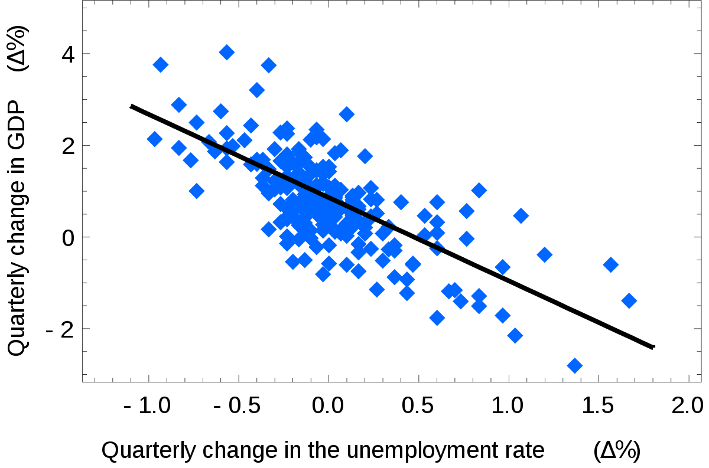{kind=link}
Extrapolation#
Structural time dependence, \(\hat{Y}_{t+1}\) depend on \(Y_{t}\) Predicting \(\hat{Y}_{t+h}\) requires predicting all \(\hat{Y}_{t+i}\quad \forall i \in [1,h- 1]\) Cumulative estimation error make the results unusable.
Intuitively, the farther we move in the future, the higher the chance of exogenous external shock occurring (Risk of structured breaks, innovation, macroeconomic shocks, news…) \(\Rightarrow\) The lower the accuracy of the model
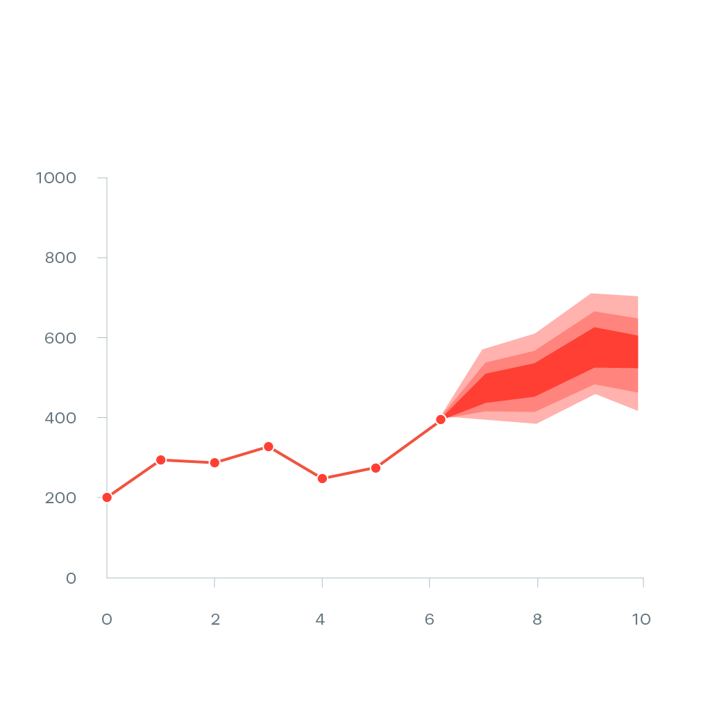{kind=link}
Statistical Features and Properties of Financial Time series#
Stylized Properties: Fan and Yao (2015, the Elements of Financial Econometrics) identify 8 main “stylized facts”
Stationarity
Absence of autocorrelations
Heavy tails
Asymmetry
Volatility clustering
Aggregational Gaussianity
Long- range dependence
Leverage effect
Stationarity#
Definition: Strong Stationarity
If \({y_t}\) is a stationary time series, then for any period \(s\) in the future, the distribution \(\{y_t, \dots, y_{t+s}\}\) doesn’t depend on \(t\)
Definition: Weak Stationarity (Second Order Stationarity)
A stochastic process \(X_{t} \in \mathbb{Z}\) is weakly stationary if and only if:
\(\mathbb{E}(X^2_t) < \infty \quad \forall~ t \in \mathbb{Z}\)
\(\mathbb{E}(X_t) = \mu \quad \forall~t \in \mathbb{Z}\) doesn’t depend on \(t\)
\(\mathbb{C}ov(x_t, x_{t+h}) = \mathbb{E}[(x_{t+h} - m)(x_t - m)] = \gamma(h) \quad \forall~ (t, h)~ \in \mathbb{Z}^2\) doesn’t depend on \(t\)
Weak stationarity means that the stochastic process oscillates around a constant level, is not trending, and has the following properties:
The mean and time-covariance are constant over time
Because the time-covariance is constant over time, it implies that the variance is also constant over time $\( \mathbb{V}(X_t) = \mathbb{C}ov(X_t, X_{t}) = \gamma(0) \qquad \forall t \in \mathbb{Z} \)$
\(\mathbb{C}ov(X_t, X_{t}) = \gamma(h) \qquad \forall~ h \in \mathbb{Z}\) can be interpreted as covariance doesn’t change when shifted in time $\(\mathbb{C}ov(X_r, X_s) = \mathbb{C}ov(X_{r+t}, X_{s+t}) \qquad \forall ~(r, s, t) \in \mathbb{Z}^3 \)$
Therefore, a stationary series is:
Roughly horizontal. The stochastic process oscillates around a constant level $\(\mathbb{E}(X_t) = \mu \forall t\)$
Constant variance. covariance doesn’t change when shifted in time $\(\mathbb{V}(X_t) = \mathbb{C}ov(X_t, X_t) = \gamma(0) \qquad \forall ~t~ \in~ \mathbb{Z}\)$
No predictable patterns in the long term
Fact N1: Retrurns are stationary
In general, prices are non- stationary but returns are stationary
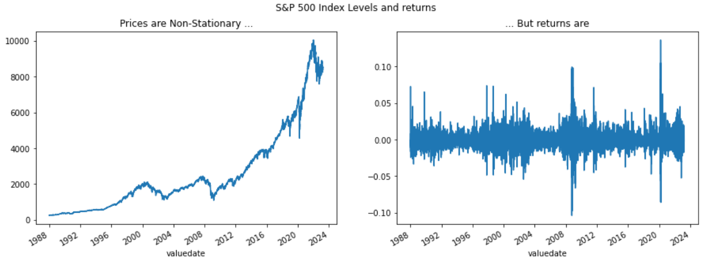
How do you identify non- stationary series?#
Tip
It is easier to reject the stationarity of a time series rather than confirm it
Visually:
The time plot gives information on the first moments throw time. For example, it is easy to see
that \(\mu\) is not constant, and the timeseries have a drift
{kind=link}
\(\sigma\) is not constant, and changing over time
{kind=link}
Or the series presenting a seasonal pattern
{kind=link}
Global vs Local:
This technique consist in computing the first moments (mean, variance) locally and comparing them with the global moments computed on the entire time series.
Typical structural breaks can easily be identified by this technique. The figure below show a double structural break, occuring at time t=250, where a change of the mean is followed by an increase in volatility.
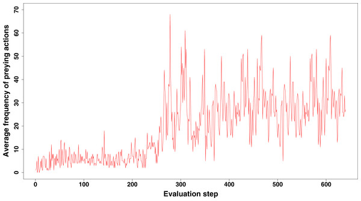
ACF Analysis
The ACF of stationary data drops to zero relatively quickly
The ACF of non- stationary data decreases slowly
For non- stationary data, the value of the first coefficient is often large and positive
On the right panel, we see the ACF analysis of a stationary time series. The series is a white noise, given by \(y_t = e_t\) where \(e_t\) is a series of random variable that idependents and identically normally distributed \(\forall ~ e_t \sim N(0,1)\). We note that the autocorrelation drops immediatedly to 0 at the first lag, and it is insignificant for the rest of lags. Inversely, the left panel, shows a random walk, computed as the cumulative sum of white noise presented in the right panel. The timeseries is diffinately not stationary, and the ACF is decreasing slowly with the number of lags
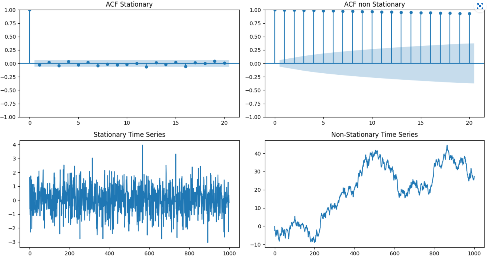
Unit Root Tests: Statistical tests for the presence of unit roots
Augmented Dickey- Fuller test: null hypothesis is that the data is **non- stationary and non- seasonal
KPSS (Kwiatkowski- Phillips- Schmidt Shin) test: the null hypothesis is that the data is **stationary and non- seasonal
Other tests are available for seasonal data
Absence of autocorrelations#
Definition: Autocorrelation
The autocorrelation denoted \(\rho(k)\) is the correlation between the values of the process at different times:
with \(\mu = \mathbb{E}[X_t]\), \(\sigma^2 = \mathbb{V}(X_t), \forall ~t\) and \(\gamma_k\) the autocovariance of order \(k\)
Definition: Sample Autocorrelation
where \(\hat{\sigma}^2\) and \(\hat{\mu}\) are consistent estimators of the mean \(\mu = \mathbb{E}(X_t)\) and the variance \(\sigma^2 = \mathbb{V}(X_t)~ \forall t\)
Partial Autocorrelation:
Autocorrelation of the term at lag \(k\) with the current value of the time series, \(\mathbb{C}orr(X_t, X_{t- k})\), can be a simple artifact of a compounding effect of the predominant correlation of the terms at shorter lags. Typically, for an AR(1) model, because \(|\mathbb{C}orr(X_t, X_{t- k})| >0 ~\forall t\) so \(|\mathbb{C}orr(X_{t-1}, X_{t- 2})| >0\) so \(X_{t-2}\) impacts \(X_t\) through \(X_{t-1}\)
Definition: Partial autocorrelation
Partial autocorrelation at lag k is the correlation after removing the effect of the terms at shorter lags

Examples:#
Example 1: Autocorrelation of the US CPI 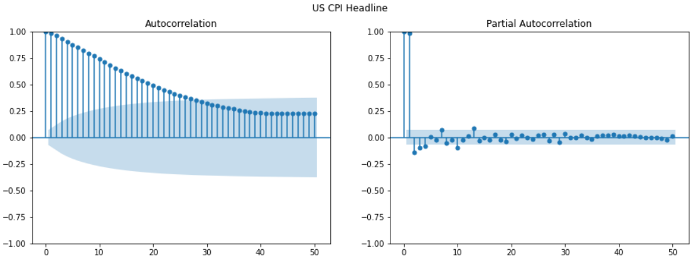
Highly significant autocorrelation in the first 20 lags
However, PACF displays one single significant bar at the first lag
Relation between t and t- s, s >1 goes through t- 1
AR(1) model is the best fit to the time series
Example 2: Autocorrelation of the SP500 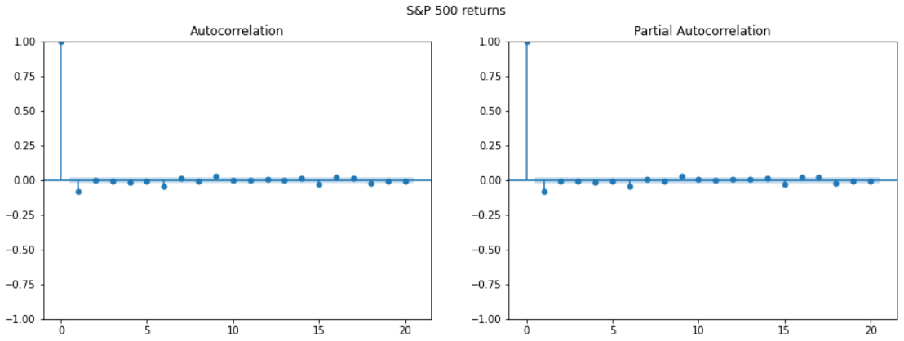
The fact that returns hardly show any serial correlation does not mean that they are independent
Financial time series are difficult to model. That’s why we need Quants!
Fact N2: Absence of autocorrelation
The autocorrelations of assets returns are often insignificant, except for intraday time scales (around 20 minutes) for which the microstructure effects come into play
Heavy Tails#
“Heavier tails” are rigorously defined by the kurtosis, which is the fourth- order moment (see before)
Mandelbrot (1963) recognized the heavy- tailed, highly peaked nature of certain financial time series
These heavy tails can be explained by risk aversion, heard behavior, and market microstructure (illiquidity, asymmetric information, etc.)
Forms of Kurtosis (Fat Tails): There are different shapes of kurtosis: 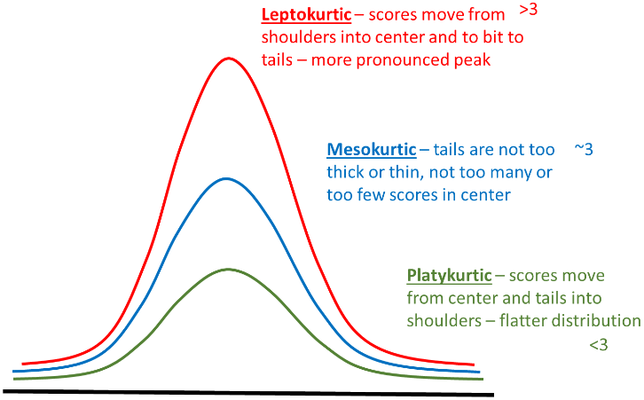
Fact N3: Heavy Tails
The probability distribution of many financial variables, including asset returns, often exhibit heavier tails than those of a normal distribution
Asymmetry#
Asymmetry is defined by the skewness, which is the third- order moment
This reflects the fact that the downturns of financial markets are often much steeper than the recoveries
Investors tend to react more strongly to negative news than to positive news
Rush toward the exit door/ flight to safety
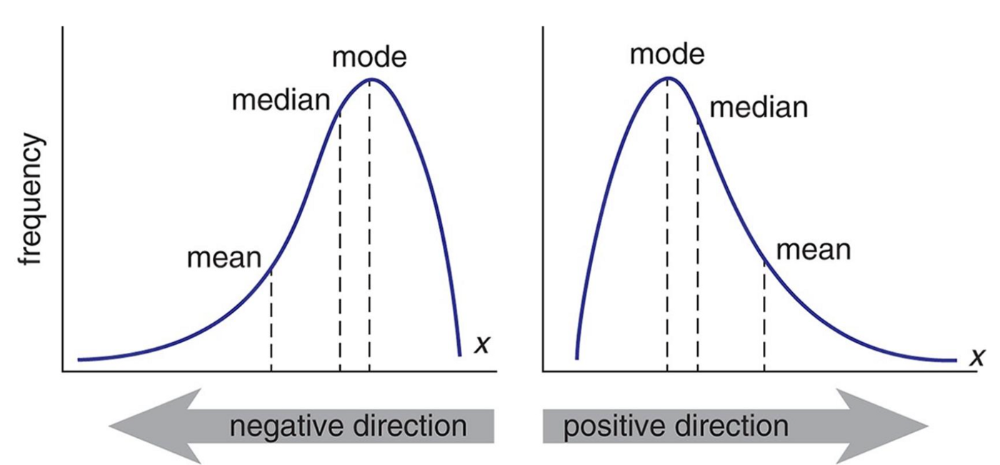
Skew \(= 0 \Rightarrow\) Symmetric distribution \(\Rightarrow\) **Mean = **Median
Skew \(\geq 0 \Rightarrow\) Positive skew implies that the **Mean is driven by a small number of high values
Skew \(\leq 0 \Rightarrow\) Positive skew implies that the **Mean is driven by a small number of small values
Fact N4: Asymmetry
The distribution of many financial variables, including asset returns, are often **asymmetric and **negatively skewed
Volatility Clustering#
Fact N5: Volatility Clustering
Large price changes tend to be followed by large price changes (up and down). It means that returns with large absolute values or large squares occur in clusters
Note: volatility clustering is the consequence of the autocorrelation of the squared returns
Example: The VIX is the implied volatility of the US SP 500, displays volatility regimes: Periods of tranquility alternate with periods of high volatility (volatility regimes)
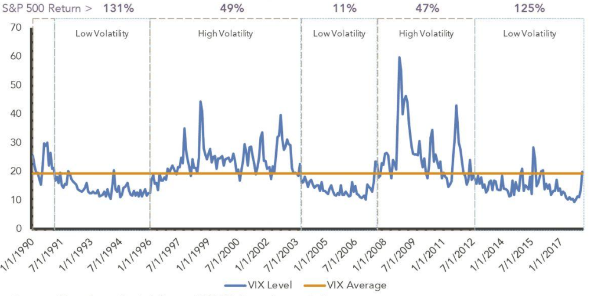
Long Range Dependence#
The ARCH effect
The autocorrelation of the squared returns is called the **ARCH effect (auto- regressive conditional heteroskedasticity)
ARCH effect is important in finance, because it describes patterns in the dynamic of financial volatility
Those autocorrelations become weaker and less persistent when the sampling interval is increased to a week or a month
SP 500 Returns (left) and squared returns (right) 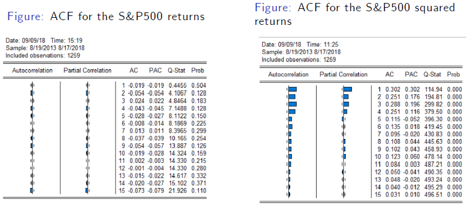
Fact N6: Long Memory
At the difference of returns, squared returns and absolute returns exhibit significant autocorrelations (long- memory)
Leverage Effect#
Fact N7: the Leverage Effect
Assets returns are negatively correlated with the changes in their volatilities
Financial explanations As asset price declines, companies mechanically become more leveraged (debt- to- equity ratio increases) and riskier: therefore, their stock prices become more volatile. Subsequently, when stock prices become more volatile, investors demand high returns (risk premium), and hence stock prices go down
Volatilities caused by price decline are typically larger than prices appreciation due to declined volatilities
Aggregational Gaussianity#
Asset returns over \(k\) days is simply the aggregation of \(k\) daily returns
When the time horizon \(k\) increases, the central limit theory says that the distribution of returns over a long- time horizon (a few months) tends toward a normal distribution
Fact N8: Aggregational Gaussianity
Over long horizons, the peculiarities of financial time series over short- term horizons (skewness, kurtosis, ARCH effect etc.) tend to vanish
Dispite this nice feature, people are mostly interested in relatively short- term movements, suggesting that working under the Gaussianity assumption is often not appropriate
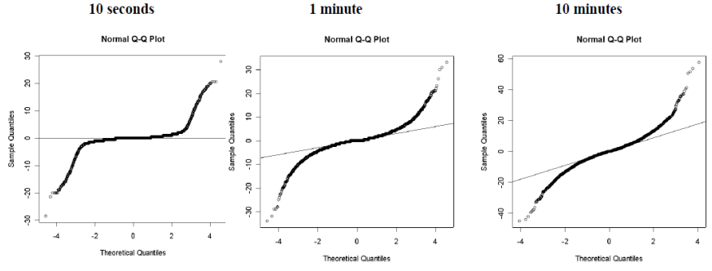
Useful Techniques: Differencing#
Differencing#
Differencing helps to stabilize the mean
The differenced series is the change (or first difference) between each observation in the original series: \(y'_t = y_t - y_{t- 1}\)
The differenced series will have only \(T- 1\) values since it is not possible to calculate a difference \(y'_1\) for the first observation
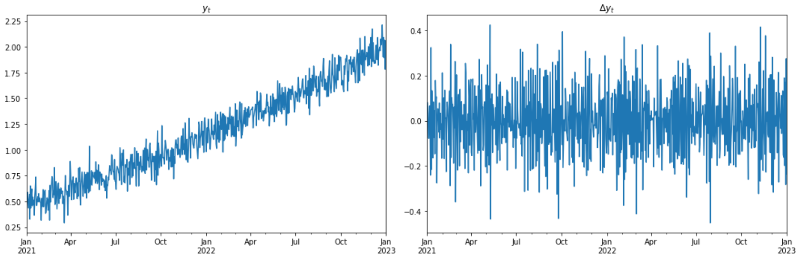
Suppose $\(y_t = \beta_0 + \beta_1 \times t + \epsilon_t\)$
Let $\( z_t = \Delta y_t = y_t - y_{t- 1}\)$
Second- Order Differencing:#
Occasionally, the differenced data will not appear stationary and it may be necessary to differentiate the data a second time:
\(y''_{t}\) will have \(T- 2\) values
In practice, it is almost never necessary to go beyond second- order differences
Seasonal Differencing#
Defintion: Seasonal Difference
A seasonal difference is a difference between an observation and the corresponding observation from the previous “season”
where \(m\) is the number of observations in a “season”. For example, for monthly data, \(m = 12\), for quarterly data, \(m = 4\)
When both seasonal and first differences are needed
It makes no difference which one is done first - the result will be the same
If seasonality is strong, we recommend that seasonal differencing be done first because sometimes the resulting series will be stationary and there will be no need for the further first difference
It is important that, if differencing is used, the differences are **interpretable: for instance, taking lag 3 differences for yearly data is difficult to interpret
Backshift Notation#
Notation
The backshift notational device, \(B\) is used as follows:
\(B\) operating on \(y_t\) has the effect of shifting the data back one period.
Two applications of \(B\) to \(y_t\) shifts the data back two periods
\(B(B y_t) = B^2 y_t = y_{t-2}\)
\(B\) depends on the period / frequency considered. Shifting monthly data by a year supposes using \(B^{12}\)
Backshift Operator and Differencing
The backshift operator is convenient for describing differencing
\(y'_t = y_t - y_{t-1} = y_t - By_t = (1-B)y_t\)
Likewise, second-order differences are obtained with \(y''_t = (1-B)^2y_t\)
Pay attention !! The second-order difference is not second difference
Second order difference: \((1-B)^2 y_t = y''_t = (y_t - y_{t-1}) - (y_{t-1} - y_{t-2})\)
Second difference: \(1-B^2 y_t = y_t - y_{t-2}\)
ARMA type models#
Autoregressive (AR) Models#
Definition:
AR model is a multiple regression with lagged variables
where \(\epsilon_t\) is a white noise
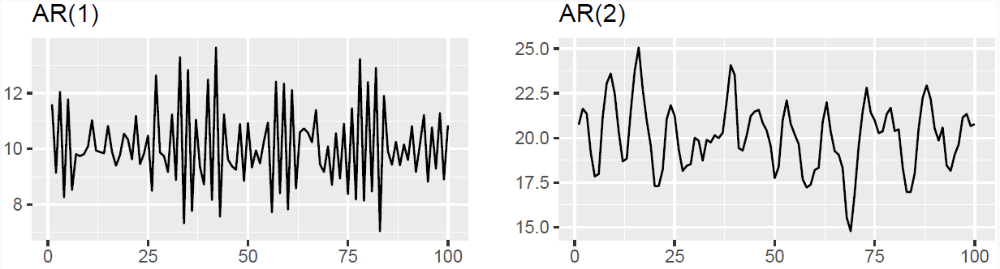
AR(1) Model \( y_t = c + \phi_1 y_{t- 1} + \epsilon_t \)
When \(\phi_1=0\), \(y_t\) is equivalent to a white noise
When \(\phi_1=1\) and \(c=0\), \(y_t\) is equivalent to a random walk
When \(\phi_1=1\) and \(c \neq 0\), \(y_t\) is equivalent to a random walk with drift
When \(\phi_1<0\) and \(c=0\), \(y_t\) is mean reverting. It tends to oscillate between positive and negative values
Stationarity Conditions#
General Condition for Stationarity
To restrict AR models to stationary data, some constraints on the coefficients are needed Complex roots of the polynomial \(\mathcal{P}(z) = 1 - \phi_1z - \phi_2 z^{2} - \dots \phi_p z^{p}\) lie outside the unit circle of the complex plane
Intuitively, for an AR(1) model, the backshift polynomial is
To get the AR expression not explosive, we need \(|\frac{1}{\phi_1}| < 1\) and therefore \(|\phi_1| > 1\)
For low lags orders, the stationarity conditions are simply:
For \(p=1\): \(- 1 < \phi_1 < 1\)
For \(p=2\): \(- 1 < \phi_2 < 1\), \( \phi_1 + \phi_2 < 1\) and \( \phi_2 - \phi_1 < 1\)
More complex conditions hold for \(p \geq 3\)
Estimation software (R, Python, Eviews, etc.) takes care of this
Statistical Test: Dickey- Fuller Test#
It sometimes easy to see if a timeseries is non-stationary, by sometimes the presence of a unit rood is difficult to identify. In such cases, we have to rely on formal statistical test
In the following, we are going to explain how the Dickey-Fuller test can be used to test whether a time series following an AR(1) model is stationary
Hypothesis testing
\(\left\{\begin{matrix} H0: & y_t~ \text{has a unit root} & \Rightarrow \phi_1 =1\\ H1: & y_t~ \text{has no unit roots} & \Rightarrow \phi_1 < 1\\ \end{matrix}\right\}\)
With this change of variable the hypothesis testing become
\(\left\{\begin{matrix} H0: & y_t~ \text{has a unit root} & \Rightarrow \delta =0\\ H1: & y_t~ \text{has no unit roots} & \Rightarrow \delta < 0\\ \end{matrix}\right\}\)
If the null hypothesis H0 is true, \(\delta =0\) and \(\Delta y_t\) is a random walk As per any hypothesis testing for the significance of the parameters of a regression, we compute the t-statistic \(w = t_{\hat{\delta}} = \frac{\hat{\delta}}{std(\hat{\delta})}\). However, since \(y_t\) is supposed not stationary under the null hypothesis, the distribution of the statistic is not compared with a t-distribution but with the Dickey-Fuller distribution
How to identify the order of an AR process#
By definition, PACF gives the direct effect of lag k on the current value of the time series. Therefore, the PACF allow us to easily identify the order of an AR generated process
Let’s consider the following time series, obeying to an AR(2) model
\(y_t =\alpha - 0.5 \times y_{t- 1} + 0.8 \times y_{t- 2} + 0.4 \times y_{t- 3} + \epsilon_t\)
The PACF, plotted in the middle panel, shows significant autocorrelations exactely on the lags where the autocorrelation exist (as per the true data generating process). On the contrary, the ACF has multiple significant lags until lag 10
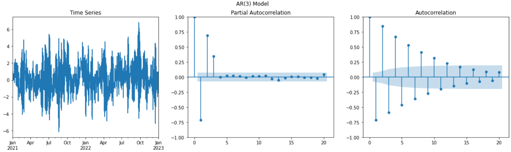
MA: Moving Average Model#
Moving Average Model
MA model is a multiple regression with past errors as predictors
where \(\epsilon_t\) is a white noise
Caution: Do NOT confuse this with moving average smoothing!
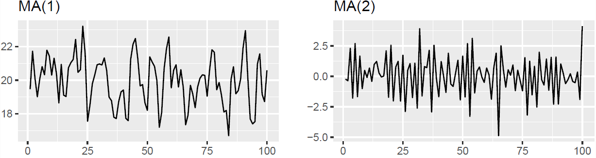
How to identify the order of an MA process#
Suppose the following MA(q) model
\(MA(q):\quad X_t = \mu +\phi_1\epsilon_{t-1}+\phi_2\epsilon_{t-2}+...+\phi_q\epsilon_{t-q}+\epsilon_{t}\)
The ACF computes the correlation between \(X_t\) and \(X_{t-k}\) \(\mathbb{C}orr(X-t, X_{t-k}) = E[X_tX_{t-k}] - E[X_t]E[X_{t-k}]\)
From an ACF we can deduce the order of the MA model as the lag on which the correlation turns to 0
Example MA(3)
\(MA(3):\quad X_t = 50 +5\times\epsilon_{t-1}+3\times\epsilon_{t-2}+ 10\times\epsilon_{t-3}+\epsilon_{t}\)
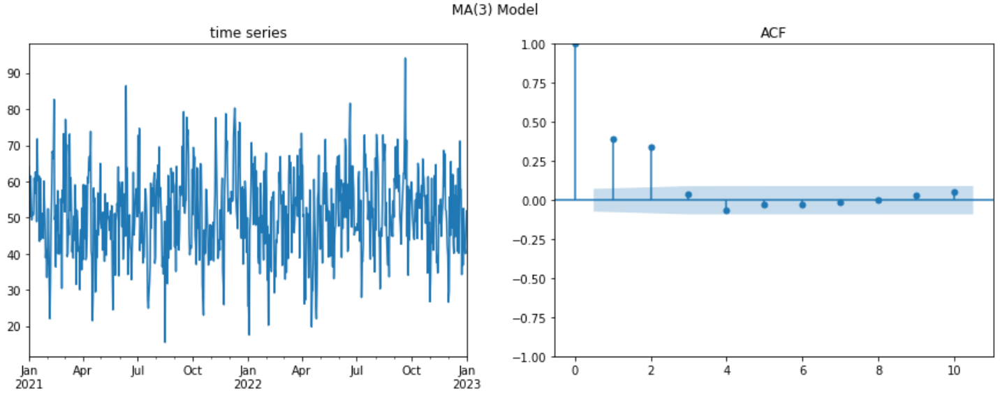
Invertibility: From MA(q) to AR(\(\infty\)) and From \(AR(p)\) to MA(\(\infty\)) Model#
Wold Decomposition
It is possible to write any stationary \(AR(p)\) model as an MA(\(\infty\))
Intuitive: just go backward!
Providing that \(1 < \ \phi_1 \ < 1\):
MA invertibility
Under certain conditions, it is possible to write \(MA(q)\) model as AR(\(\infty\)) process. In this case, the MA model is said to be invertible
General Condition for MA(q) Invertibility
To insure MA models invertibility, some constraints on the coefficients are needed Complex roots of the polynomial \(\mathcal{P}(z) = 1 + \theta_1z + \theta_2 z^2 + \dots + \theta_q z^q\) lie outside the unit circle of the complex plane
For q =1: \(- 1 \ < \theta_1 \ <1\)
For q=2:
\(- 1 \ < \theta_2 \ <1\)
\(\theta_1 + \theta_2 > - 1\) and \(\theta_1 - \theta_2 \ < 1\)
More complicated solutions hold for \(q \geq 3\) Estimation software takes care of this
Invertible models have some mathematical properties that make them easier to use in practice
This is intuitive: AR processes are embedding new information on the most recent lags
ARMA(p, q) Model#
Defintion
The predictors include both lagged values of \(y_t\) and lagged errors
Important specification: the future value of the series depends both on the past values it took (dynamic), as well as recent random noise/error term
This simple model is “learning” both from the dynamic of the past values and from its inherent randomness
Conditions on AR coefficients ensure stationarity
Conditions on MA coefficients ensure invertibility
Autoregressive Integrated Moving Average (ARIMA)#
ARIMA: ARIMA stands for: Autoregressive Integrated Moving Average model
Tip
Basically, it is a non- stationary model that can be made stationary by differencing \(d\) time
\((1- B)^d y_t\) follows an ARMA model, where \(d\) is the degree of differencing until the series becomes stationary
Once differenced \(d\) times, it is stationary and behaves as an ARMA model
Let’s consider the \(ARIMA(p, d, q)\) where \(p\) is the autoregressive order, \(d\) the degree of differencing and \(q\) the order of the moving average part. All linear models we discussed are special cases of the ARIMA model:
White noise model: \(ARIMA(0, 0, 0)\)
Random walk: \(ARIMA(0, 1, 0)\) with no constant
Random walk with drift: \(ARIMA(0, 1, 0)\) with constant
\(AR(p) = ARIMA(p, 0, 0)\) , \(MA(q) = ARIMA(0, 0, q)\)
Seasonal ARIMA (SARIMA)#
Defintion
ARIMA \( \underbrace{(p, d, q)}_{_{\text{Non-Seasonal part of the model}}} \qquad \qquad \underbrace{(P, D, Q)_m}_{\text{Seasonal part of the model}}\)
where \(m\) is the number of observations in a cycle
Example: \(ARIMA(1,1,1)(1,1,1)_4\), without constant
All factors can be multiplied to obtain the model’s component form
The seasonal part of an AR or MA model will be seen in the seasonal lags of the PACF and ACF
\(ARIMA(0,0,0)(0,0,1)_{12}\) will show
A spike at lag 12 in the ACF but no other significant spikes
The PACF will show exponential decay in the seasonal lags; that is, at lags 12, 24, 36, etc.
\(ARIMA(0,0,0)(1,0,0)_{12}\) will show
Exponential lags in the seasonal lags of the ACF
A single significant spike at lag 12 in the PACF
Treatment of Seasonality#
Daily data can exhibit multiple seasonal periodicities. This is a complication for all high- frequency forecasting problems. This comes with additional complexity. For instance,
Months has different number of days
Leap years with different number of days
Weeks do not align with daily cycles (the year is not divisible in an exact number of weeks)
Some major events are based on the week within the month regardless of the exact day. For example,
Options and futures expires on the 3rd friday of March, June, September and December
Options expiries induce large volumes and volatility in the market as market participant either roll their positions or shuffle their portfolios
Seasonality can be irregular:
Ramadan is moving by 11 to 12 days backward from one year to another. Thus it can overlap between 2 months
Chinese new year
Some other religious festivities
To deal with such complex seasonality, one can rely on two approaches
Simplification of seasonal terms
Trigonometric representation of seasonality: Fourier transform
Avoid including a large number of binary variables (“dummies”) to capture different seasonality patterns
Binary seasonality, the fact of introducing a bunch of binary variables (“dummies”) to capture the different seasonality patterns, should be discourage, because:
Including a large number of variables imply to estimate many more parameters, hence adding parametric noise to the model
Many parameters are not relevant/useful, increasing noise/signal ratio
Reducing the degrees of freedom spurs the risk of overfit
We tested a large number of models in different countries, confirming the relatively bad performance of ARIMA with binary seasonality
Empirical Strategy#
What is a White noise ?#
Defintion
A time series is a white noise if the variables are independent and identically distributed with a mean of zero.
\(\left\{\begin{matrix} \forall t, & \mathbb{E}[\epsilon_t] = 0 \\ \forall t, & \mathbb{V}ar[\epsilon_t] = \sigma^2 \\ \forall t,s & (\epsilon_t, \epsilon_{s}) \quad independent \\ \end{matrix}\right.\}\)
Why does it matter? $\(y_t = Signal + Noise \)$
Noise is the unpredictable part of the time series that can not be modeled. Complete randomness
As long as the residuals of the model have structure, the model is not capturing the whole signal but only part of it
Stop modeling when the series of errors from a time series forecast model is behaving like a white noise
Empirical Strategy#
The general approach of (financial) econometrics is as follows:
Specification of the model
Estimation of the parameters
Diagnostic tests
Significance tests
Specification tests
Backtesting tests
etc.
Interpretation and use of the model (forecasting, historical studies, etc.)
To Specify an Appropriate Time Series Model
Study some statistical properties of the observed data \(\{x_t\}\), for instance, the stationarity, the patterns of the autocorrelation function ACF, or the partial autocorrelation function PACF, etc.
Compare these properties to the theoretical properties of some typical time series models, such as AR, MA, ARIMA, SARIMA, etc.
Choose the most appropriate model and estimate its parameters
Use this model for forecasting
Model Comparison and parameters Selection#
To compare models in terms of performance and specification, we can rely on the AIC/BIC
Aikaike Information Criteria (AIC)
where \(L\) is the maximized likelihood fitted to the differenced data, and \(k\) denote the degrees of freedom: if the model embeds a constant \(c\), \(k=1\), else \(k=0\)
The algorithm to select parameters
ARIMA Specification
Need to select the appropriate order for \(p, q, d\)
Hyndman and Khandasar (2008) selection algorithm:
Select the differencing order (the required number of differences) \(d\) and \(D\) using KPSS test
Select \(p, q\) by minimizing AICs
Use stepwise search to traverse model space (test different combinations of \(p, q\) for robustness)
Select the current model, with the smallest AIC from the most parsimonious
ARIMA(0,d, 0), ARIMA(1, d, 0), ARIMA(0, d, 1), ARIMA(1, d, 1) and ARIMA(2, d, 2)
Consider variations of the current model:
Vary one of \(p, q\) from current model by \(\pm 1\)
\(p, q\) both vary from current model by \(\pm 1\)
Include/exclude the constant \(c\) from the current model
The model with the lowest \(AIC\) becomes the current model. Repeat step 2 until no lowest AIC can be found (traverse model space)
General Apporach#
The graph below details the procedure:
Start with Plotting the data to identify any unusual observations
If necessary, transform the data (using a Box-Cox transformation) to stabilize the variance
If the data are non-stationary, first-difference it until it becomes stationarity
Examine the ACF/PACF: will allow you to answer the question: Is an \(AR(p)\) or \(MA(q)\) reasonable assumptions?
Try your chosen models: use AIC/BIC to compare with other models
Plot the residuals, look at the residuals ACF. Residuals should look like a white noise. As long as the residuals of the model have a time-varying structure, the model is not capturing the whole signal but only part of it
Once the residuals look like a white noise, your modelization is complete, compute the forecasts
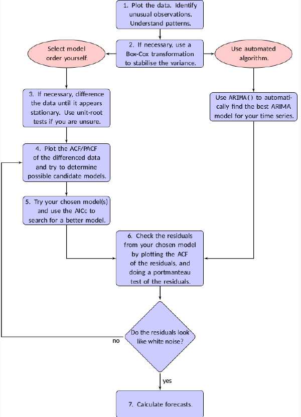